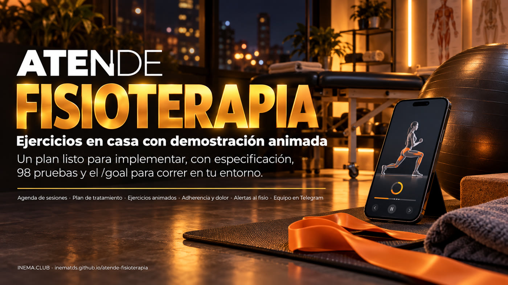

Especificación, 98 pruebas de aceptación, salvaguardas y prompts para que un agente construya, en tu entorno, la atención de una clínica de fisioterapia: agenda de evaluación y sesiones, plan de tratamiento con alerta de abandono, ejercicios domiciliarios con recordatorio, adherencia y dolor, y el equipo en Telegram. El bot nunca da orientación clínica. El sistema todavía no está implementado: este repositorio es el plan, y tú ejecutas la implementación.

Aquí no hay una aplicación terminada. Hay el contrato de lo que la aplicación debe hacer, la batería de pruebas que lo demuestra y las salvaguardas que impiden que el agente haga trampa. Quien construye es Claude Code o Codex, corriendo en tu máquina, con tu suscripción. El hermano Atende Clínica, que sirvió de molde, se hizo exactamente así y cerró 93 de 93 pruebas.
Agenda de evaluación, sesiones y RPG (reeducación postural global), sin doble reserva, confirmación automática y lista de espera. En el centro, el plan de tratamiento: sesiones previstas frente a realizadas, con alerta de abandono y de reevaluación. Python 3 solo con la biblioteca estándar y SQLite, una clínica por instalación.
Especificación de 26 secciones (0 a 25), 98 pruebas de caja negra, 21 decisiones ya propuestas, mapa hacia Raio-X, prompts para /goal y para el loop headless, y las salvaguardas que congelan el contrato. Un validador adversarial ya revisó todo y encontró 9 problemas, 3 de los cuales habrían bloqueado a un implementador honesto.
Las faltas, el paciente que no vuelve y el tratamiento indicado que nunca empieza son las fugas que el plan ataca. El sistema entrega ocho números del mes al panel de Raio-X de Margem, que es la fuente de las reglas de negocio y de la salvaguarda del consejo profesional.
Explica un ejercicio solo si el fisioterapeuta se lo prescribió a ese paciente. Fuera de eso responde "habla con tu fisioterapeuta" y llama a un agente humano. Nunca da diagnóstico, medicamento ni orientación clínica.
Dolor de 7 a 10 o una palabra de alerta (adormecimiento, hormigueo, pérdida de fuerza, fiebre, caída, hinchazón y otras) abre la cola humana con prioridad alta y avisa al equipo por Telegram. La respuesta cita al fisioterapeuta y al 192 (el número de emergencias de Brasil) y nunca orienta.
El dato de salud es sensible: exportar y borrar valen también para el plan, la prescripción y los registros de adherencia y dolor. La campaña solo llega a quien dio su consentimiento y pasa por la salvaguarda del COFFITO 424/2013, con la investigación de Raio-X como fuente. LGPD (la ley brasileña de protección de datos), COFFITO (el consejo brasileño de fisioterapia) y el 192 son de Brasil.
Este es el flujo del sistema planificado, lo que el agente va a construir. Servidor Python sin dependencias, SQLite en una carpeta de datos y Docker para el VPS. Evolution y Telegram entran solo por variables de entorno; sin ellas, la bandeja de salida es simulada y no sale ninguna llamada de red.
Por el chat o por WhatsApp agenda, confirma con 1 o 2, pregunta como faço a ponte? (cómo hago el puente; solo si se lo prescribieron), activa el recordatorio con lembrete 19:00 (o lo apaga con sem lembrete), responde fiz (lo hice), nao fiz (no lo hice) o dor 5 (dolor 5), resuelve dudas del FAQ, pide un agente y envía "PARAR" cuando no quiere más mensajes.
Avisos de reserva nueva y cancelada, y los comandos /agenda, /alertas, /fila, /responder y /encerrar, también como respuesta directa al mensaje del paciente.
Con token: agenda, pacientes, planes, prescripciones, adherencia y dolor, biblioteca de ejercicios, alertas, FAQ, registros, bloqueos y cola humana.
Un paquete de sesiones por paciente: previstas, realizadas y restantes. Dos faltas seguidas (ajustable) se vuelven una alerta de abandono para el equipo; el paciente no recibe mensaje automático, porque retomar el contacto es una decisión humana. Cuando quedan dos sesiones, alerta de reevaluación. Concluido el plan, el control nace 30 días después de la última sesión.
El fisioterapeuta prescribe ítems (series, repeticiones, veces al día, días de la semana) y el paciente recibe el texto con el enlace de cada ejercicio. El recordatorio diario es opt-in: solo se activa cuando el paciente lo pide, a la hora que elige (por defecto 19:00), y solo en los días prescritos.
El paciente responde fiz, nao fiz o el dolor de 0 a 10; vale un registro por día y gana el último. La adherencia semanal son los días hechos divididos entre los días previstos, de lunes a domingo, desde el inicio de la prescripción hasta hoy: 2 hechos de 4 previstos dan 50%. El dolor de la semana es el promedio de los registros.
Cada ejercicio es un SVG con animación solo en CSS, sin script y sin SMIL, porque el render de video solo avanza animación CSS. Este es el puente, con el esqueleto de la especificación.
Puente, estiramiento de isquiotibiales, rotación de hombro con bastón, péndulo de Codman, retracción cervical, gato-camello, sentadilla en la pared, elevación de talones, abducción de cadera acostado, plancha modificada, bird-dog y movilidad de tobillo.
Cada uno tiene su página pública /exercicios/<id> (pasos, errores comunes, cuidados, contraindicaciones y "detente si"). En WhatsApp va un MP4 de 4 s renderizado con HyperFrames, un paso de build local (tools/render-exercicios); sin el MP4, va el enlace. El movimiento se comprueba en el nivel 4 con verificar-independente.py, que dice PULADO (omitido) cuando falta la herramienta.
Para ejecutar el plan basta Python para las pruebas y un agente con sesión iniciada por suscripción. Docker solo entra en la verificación final y en el despliegue; Evolution y Telegram son opcionales y tuyos. Para los videos de los ejercicios, Node 22 o más nuevo, FFmpeg y Chromium.
Las pruebas usan pytest (herramienta de desarrollo). La aplicación en sí no tendrá dependencias.
# comprobar python3 --version python3 -m pip install pytest
Con suscripción, sin API de pago. Para el loop headless, clona execucao-longa en ~/projetos.
# comprobar codex --version # o: claude --version
Docker hace el build final y el despliegue en el VPS. Una instancia de Evolution y un bot de Telegram solo si quieres los canales; las credenciales quedan en .env.
# comprobar docker --version
Los comandos de abajo son los del repositorio. El ciclo: responder las decisiones, congelar el contrato, ejecutar el agente hasta 98 passed y LIMITES OK, comprobar con la verificación independiente, generar los videos y pedir la revisión clínica.
Todavía no existe ./atende: el repositorio solo tiene el plan. Comprueba que la suite se recoge sin errores y que todavía nada pasa (sin la implementación, las pruebas fallan o dan error, y eso es lo esperado).
git clone https://github.com/inematds/atende-fisioterapia && cd atende-fisioterapia python3 -m pytest -q --collect-only | tail -n 1 # 98 tests collected python3 -m pytest -q | tail -n 1 # 23 failed, 75 errors (0 passed)
Lee docs/DECISOES-ABERTAS.md (las decisiones abiertas): son 21 propuestas por defecto ya aplicadas en la especificación y en las pruebas. Responder "ok em tudo" (todo bien) destraba la ejecución. Si cambias algo marcado con ⚠ (por ejemplo la alerta de abandono, la lista de palabras de alerta o el umbral de dolor), edita docs/ESPECIFICACAO.md y tests/ antes del paso 3 y revisa el conteo. Para un piloto real, cambia también exemplos/clinica.json por tus horarios, servicios, FAQ y ejercicios.
less docs/DECISOES-ABERTAS.md python3 -m pytest -q --collect-only | tail -n 1
Con el git status limpio, el script graba el hash de tests/, pytest.ini, de la especificación y de los verificadores en hash-congelado.txt y hace un commit. Desde ahí, cualquier cambio en las pruebas se detecta.
git status bash longrun/2026-10-05-fisio-v1/congelar.sh
a) Loop headless con Codex (recomendado). loop.env define 20 ciclos de 30 min, 8 GB por ciclo, parada tras 3 ciclos sin avance, el modelo gpt-6-astra y CODEX_ARGS="-c sandbox_workspace_write.network_access=true": sin eso el sandbox de Codex bloquea el servidor local de las pruebas.
~/projetos/execucao-longa/tools/loop-longrun.sh longrun/2026-10-05-fisio-v1
b) /goal en Claude Code. Abre una sesión nueva de Claude Code en la carpeta del proyecto y sigue longrun/2026-10-05-fisio-v1/prompt-goal-claude.md: pega la condición de /goal (la salida debe mostrar 98 passed y LIMITES OK) y, como primer mensaje, el bloque de prompt-goal-codex.md a partir de RESULTADO:.
claude # sesión nueva, dentro de atende-fisioterapia
c) Codex TUI. Pega el contenido de longrun/2026-10-05-fisio-v1/prompt-goal-codex.md.
codex -c sandbox_workspace_write.network_access=true
En el loop, loop.log muestra cada ciclo y progress.md trae una línea por checkpoint. El código de salida del loop dice lo que pasó: 0 concluido (la prueba final pasó), 1 tope de ciclos alcanzado, 2 detenido tras 3 ciclos sin avance, 3 otro loop ya corre en la carpeta. Una prueba en conflicto con la especificación va a failures.md: es una compuerta humana, y el agente no debe ajustar pruebas ni la especificación.
tail -f longrun/2026-10-05-fisio-v1/loop.log cat longrun/2026-10-05-fisio-v1/state.md
Cuando el agente diga "concluido", ejecuta los tres comandos. El último el agente nunca lo vio: busca valores del fixture copiados en el código, levanta una clínica que nunca apareció (otro paso de agenda, otro umbral de dolor, otro reloj, ejercicios con otros textos), abre 3 SVG en un Chromium para probar que se mueven, renderiza un MP4 con HyperFrames y hace docker build con healthcheck. Sin Chromium o sin HyperFrames, esas etapas salen como PULADO (omitido), nunca como OK; Docker es obligatorio. Después, abre /, /equipe y /exercicios/ponte en el navegador.
python3 -m pytest -q tests/ # 98 passed bash longrun/2026-10-05-fisio-v1/verificar-limites.sh # LIMITES OK python3 longrun/2026-10-05-fisio-v1/verificar-independente.py # INDEPENDENTE OK
Paso humano, después de la implementación: tools/render-exercicios (escrito por el agente) necesita red, Node 22 o más nuevo, FFmpeg y Chromium. Genera web/exercicios/<id>.mp4 (4 s, 720×720, sin audio) a partir de cada SVG. Los MP4 no entran en Git; en el VPS, ejecuta el comando una vez o copia los archivos a la carpeta de EXERCICIOS_MP4_DIR.
python3 tools/render-exercicios
Con el sistema implementado, copia el ejemplo, cambia TROQUE-ESTE-TOKEN (cambia este token) y levanta el servidor. El chat del paciente queda en /, la página del equipo en /equipe (header X-Token) y cada ejercicio en /exercicios/<id>.
mkdir -p dados && cp exemplos/clinica.json dados/clinica.json ./atende serve --porta 8080 --dados dados
El despliegue es tuyo, con tus credenciales, y el propio agente escribe las instrucciones de despliegue como parte del goal (sección 19 de la especificación): docker compose detrás de un proxy HTTPS, los webhooks de Evolution y de Telegram, y un respaldo diario.
cp .env.exemplo .env && chmod 600 .env # completa EVOLUTION_*, TELEGRAM_*, WEBHOOK_SEGREDO docker compose up -d --build
Los 12 ejercicios del ejemplo (pasos, errores comunes, cuidados, contraindicaciones y "detente si"), la lista de palabras de alerta y el umbral de dolor (dor_alerta: 7) se escribieron como ejemplo, y el contenido clínico es del fisioterapeuta. Un fisioterapeuta debe revisar todo antes de que llegue a un paciente real (decisiones 10 y 9 en docs/DECISOES-ABERTAS.md). Queda un punto abierto: palabras como caiu y queda (cayó, una caída) coinciden con frases comunes ("a dor caiu bastante", el dolor bajó mucho) y abren por error una entrada de prioridad alta en la cola, una falsa alarma barata que el fisioterapeuta decide si mantiene (decisión 20).
Todo lo que el agente necesita para construir, y todo lo que impide que finja haber construido.
De caja negra, por HTTP y por línea de comandos, en 12 archivos.
test_integracoes.py 16 test_agenda.py 12 test_conversa.py 10 test_cadastros.py 9 test_campanhas.py 9 test_lembretes.py 8 test_prescricao.py 8 test_exercicios.py 7 test_basico.py 6 test_planos.py 6 test_docker.py 4 test_lgpd_raiox.py 3
docs/ESPECIFICACAO.md, secciones 0 a 25: ejecución, clinica.json, reglas de agenda, API HTTP, conversación en 12 reglas, lista de espera, confirmación y control, campañas y salvaguarda del consejo, Raio-X, LGPD, registros, WhatsApp, Telegram, Docker, planes de tratamiento, biblioteca de ejercicios, prescripción y recordatorios, adherencia y dolor, alertas al equipo y video MP4. Historia clínica, cobro por Pix, seguros y glosas (TISS) y varias clínicas en un mismo servidor quedan explícitamente fuera.
Hash congelado de tests/, pytest.ini, de la especificación y de los verificadores. Alcance de archivos: el agente solo toca el código y sus propios registros. Sin clave de API, sin API externa en el código y sin SMIL ni script en los SVG. verificar-limites.sh comprueba todo eso e imprime LIMITES OK.
Nivel 4, escondida del agente: busca valores del fixture en el código, levanta una clínica nunca vista, con todos los argumentos explícitos, comprueba el movimiento de los SVG y el MP4 cuando existen las herramientas, y hace docker build y healthcheck. Solo así "98 passed" demuestra una lógica general.
Lenguaje, canales, el control como reevaluación, la alerta de abandono, el recordatorio opt-in, la adherencia registrada por día, el dolor y las señales de alerta, los 12 ejercicios, animación solo en CSS, lo que el bot explica, la salvaguarda del COFFITO y Raio-X. Solo los ítems marcados con ⚠ cambian el contrato.
Un validador que no vio la planificación contrastó pruebas con la especificación, rehízo las cuentas e intentó burlar las salvaguardas. Encontró y corrigió 9 problemas: 3 bloqueaban la ejecución, 4 estorbaban y 2 eran cosméticos. El relato completo está en docs/VALIDACAO.md y cada corrección tiene una línea en FALHAS.md.
Falta sin aviso, retención, tratamiento que no empieza y horario ocioso: docs/MAPA-RAIO-X.md liga cada fuga del paquete clinica con una pieza de la v1 o con el motivo de quedar fuera. La salvaguarda del COFFITO 424/2013 (precio, promoción, gratuito, testimonio, promesa de resultado) tiene como fuente la investigación de Raio-X. Detalles en la guía de Raio-X de Margem.
La LGPD de datos de salud (confirmación, control, prescripción y recordatorio como tutela de la salud; campaña solo con consentimiento; exportar y borrar), la resolución COFFITO 424/2013 para la publicidad y el 192 para emergencias. Fuera de Brasil, cambia por la ley de privacidad, el consejo profesional y el número de emergencias locales.
El plan está listo y validado. La implementación todavía no existe: nace cuando ejecutas el /goal o el loop, con el método execucao-longa. Atende Clínica siguió el mismo camino y cerró 93 de 93.
98 passed y LIMITES OK, y luego la verificación independiente. Hoy el sistema no está implementado.tools/render-exercicios una vez, con red, Node, FFmpeg y Chromium, y copiar los archivos al VPS si hace falta.